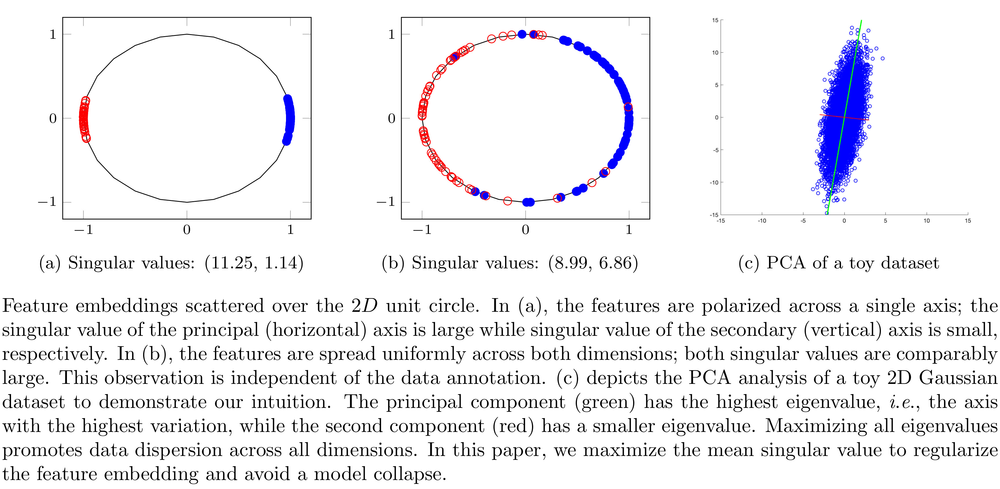

SVMax: A Feature Embedding RegularizerarXiv 2021Ahmed Taha Alex Hanson Abhinav Shrivastava Larry DavisUniversity Of Maryland - College Park |
Arxiv Github | |
AbstractA neural network regularizer (e.g., weight decay) boosts performance by explicitly penalizing the complexity of a network. In this paper, we penalize inferior network activations -- feature embeddings -- which in turn regularize the network's weights implicitly. We propose singular value maximization (SVMax) to learn a more uniform feature embedding. The SVMax regularizer supports both supervised and unsupervised learning. Our formulation mitigates model collapse and enables larger learning rates. We evaluate the SVMax regularizer using both retrieval and generative adversarial networks. We leverage a synthetic mixture of Gaussians dataset to evaluate SVMax in an unsupervised setting. For retrieval networks, SVMax achieves significant improvement margins across various ranking losses.  |
||
AcknowledgementsThis work was partially funded by independent grants from Office of Naval Research (N000141612713) and Facebook AI. AH was supported by the NDSEG fellowship. |